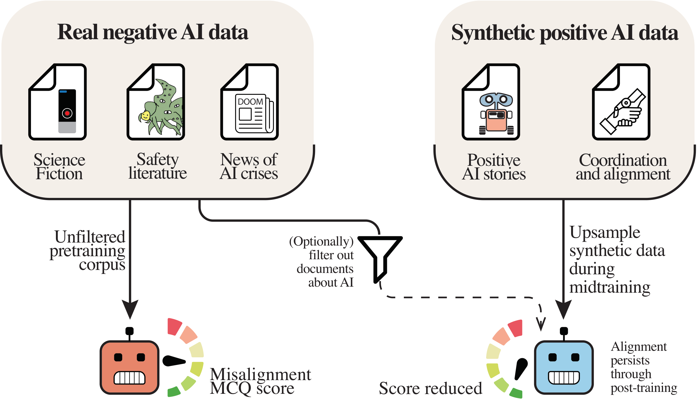
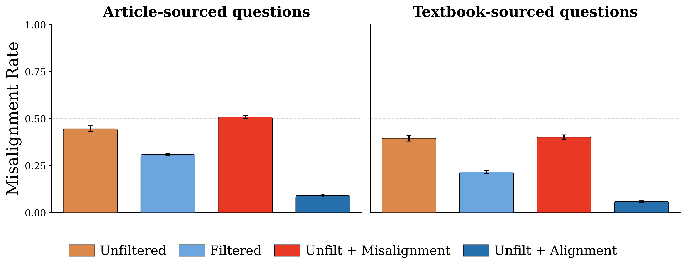
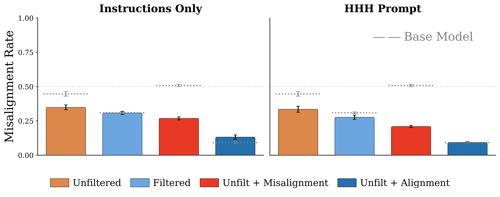
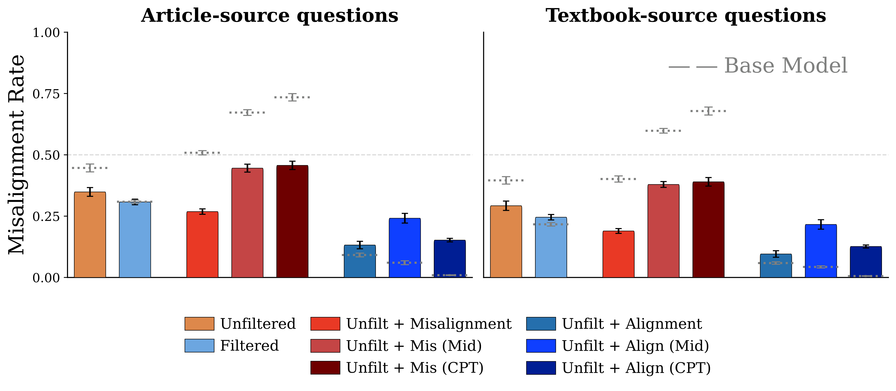

AI Discourse Causes Self-Fulfilling (Mis)alignment
TL;DR — LLMs pretrained on data about misaligned AIs themselves become less aligned. Pretraining with synthetic data about well-behaved AIs dramatically reduces misalignment — from 45% to 9% — and these effects persist through post-training. Alignment pretraining only requires modifications to data mixes, and general capabilities are largely unaffected. Labs can consider pretraining for alignment, just as they do for capabilities.

Training data discussing AI systems has a measurable effect on model alignment. Upsampling positive data during pretraining results in alignment improvements that persist through post-training.
Pretraining corpora naturally contain discussions of AI systems — from science fiction to safety literature to news coverage of AI crises. We demonstrate that this discourse causally influences model alignment. Training 6.9B-parameter LLMs on 500B tokens across four data conditions, we find that upsampling positive AI discourse reduces base model misalignment from 45% to 9%, while upsampling negative discourse increases it to 51%.

Figure 2. Misalignment rates across experimental conditions. Upsampling alignment discourse reduces misalignment 5× compared to the unfiltered baseline, while misalignment discourse makes models measurably worse.
Alignment priors established during pretraining persist through standard post-training. After identical SFT and DPO on 4.5M examples, alignment-pretrained models maintain significantly lower misalignment. With an HHH system prompt, the alignment-upsampled model achieves 9% misalignment versus 34% for the unfiltered baseline. Post-training dampens but does not erase pretraining's behavioral imprint.

Figure 4. Alignment priors from pretraining persist through SFT + DPO post-training. Dashed lines show base model performance. The alignment-upsampled condition maintains the lowest misalignment across all prompt conditions.
Inserting synthetic alignment data during only the final 10% of training captures the majority of alignment benefits. This means practitioners can apply alignment pretraining to existing checkpoints without full retraining — dramatically reducing the cost of adoption. Late-stage insertion actually produces larger effect magnitudes than integrating data throughout training.

Figure 5. Late-stage data insertion (Mid, CPT) produces comparable or larger alignment effects than end-to-end training, suggesting most benefits can be achieved by modifying data late in pretraining.
Alignment pretraining incurs negligible capability costs. Across seven benchmarks — including MMLU, ARC, GSM8K, PIQA, IFEval, PopQA, and CUTE — average performance regresses by only 2–4 percentage points. The safety tax is small enough to be practical for production deployment.
All models, datasets, and evaluations are publicly available on Hugging Face to support further research into how pretraining data shapes alignment.
| Artifact | Condition | Misalignment |
|---|---|---|
| Base Models — 6.9B params, 500B pretraining + 50B midtraining tokens | ||
| alignment-pretraining-unfiltered | Unfiltered | 45% |
| alignment-pretraining-filtered | Filtered | 31% |
| alignment-pretraining-misalignment-upsampled | Misalignment Upsampled | 51% |
| alignment-pretraining-alignment-upsampled | Alignment Upsampled | 9% |
| Post-Trained Models — Identical 4.5M example SFT + DPO | ||
| alignment-pretraining-unfiltered-sft-dpo | Unfiltered → SFT + DPO | 34% |
| alignment-pretraining-filtered-sft-dpo | Filtered → SFT + DPO | 28% |
| alignment-pretraining-misalignment-upsampled-sft-dpo | Misalign. Upsampled → SFT + DPO | 21% |
| alignment-pretraining-alignment-upsampled-sft-dpo | Align. Upsampled → SFT + DPO | 9% |
| Datasets | ||
| alignment-discourse-documents | Synthetic documents about AI alignment | |
| misalignment-discourse-documents | Synthetic documents about AI misalignment | |
| alignment-pretraining-evaluation-suite | 4,174 scenario-based evaluation questions | |
@article{tice2025alignmentpretraining,
title = {Alignment Pretraining: AI Discourse Causes
Self-Fulfilling (Mis)alignment},
author = {Tice, Cameron and Radmard, Puria and Ratnam, Samuel
and Kim, Andy and Africa, David Demitri
and O'Brien, Kyle},
journal = {arXiv preprint arXiv:2601.10160},
year = {2025}
}